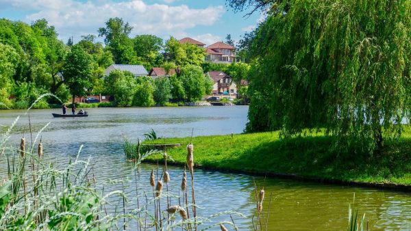
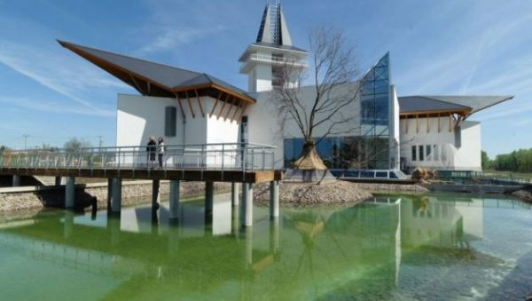
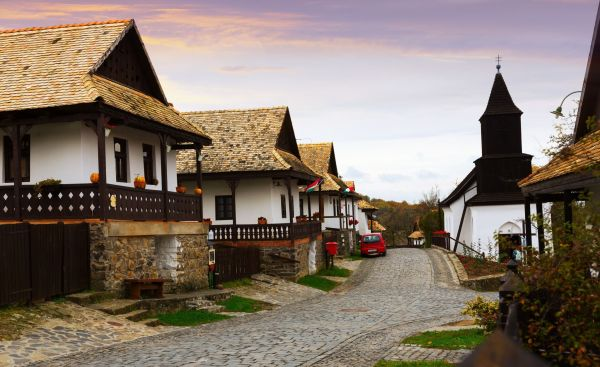
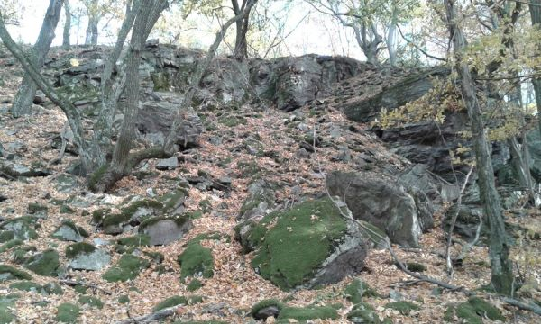
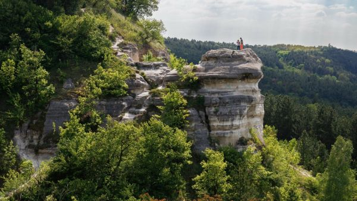
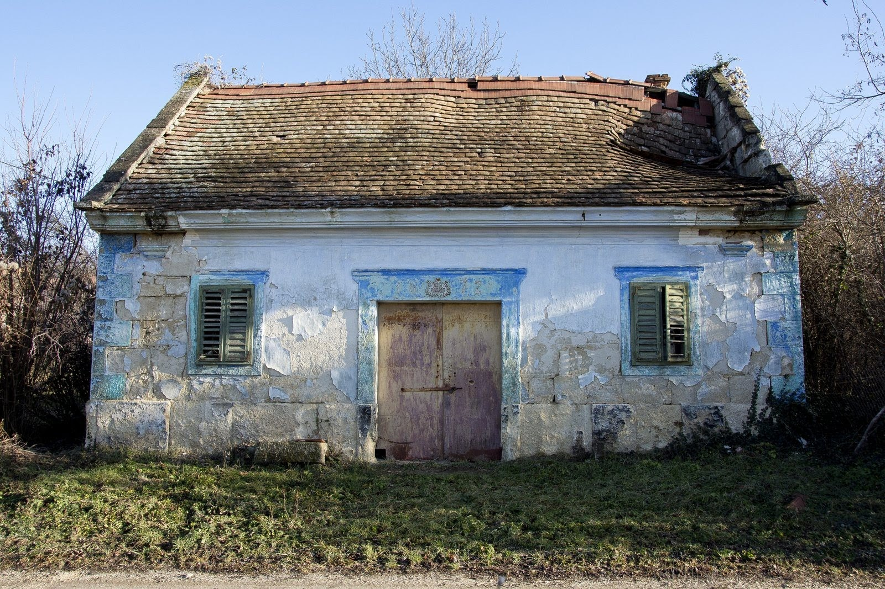
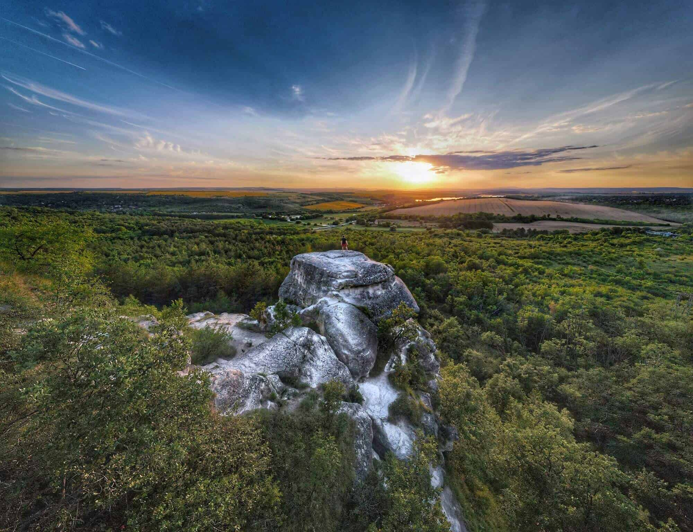

Csodás tájkép

Tükröződő fák egy kis tó partján a Duna mentén.
2300 Ft
Tiszai gát

Poroszló menti Tisza töltés viharos időben.
2300 Ft
Börzsöny

Kilátás a fák mögül a szemközti hegyoldalra. Hollókő.
2300 Ft
Pléska-szikla felé

Úton a Pléska-szikla felé az őszi erdőben.
2300 Ft
Viadukt

Biatorbágyi viakudt a fák között.
2300 Ft
Régi présház

Elhagyott présház Biatorbágy fölött
2300 Ft
Nyakas-kő

Innen ugratta Ördög nevű lovát a mélybe Sándor Móricz gróf.
2300 Ft